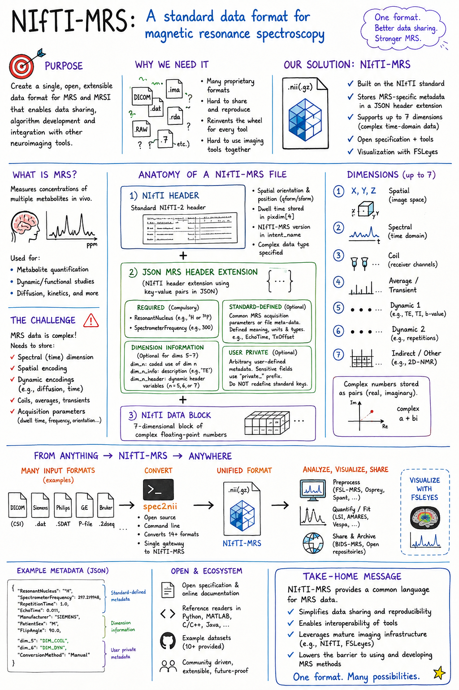

Open standard · Publication
NIfTI-MRS
A common, extensible data format that makes magnetic resonance spectroscopy easier to share, reproduce, and integrate with neuroimaging tools.

Open standard · Publication
A common, extensible data format that makes magnetic resonance spectroscopy easier to share, reproduce, and integrate with neuroimaging tools.
